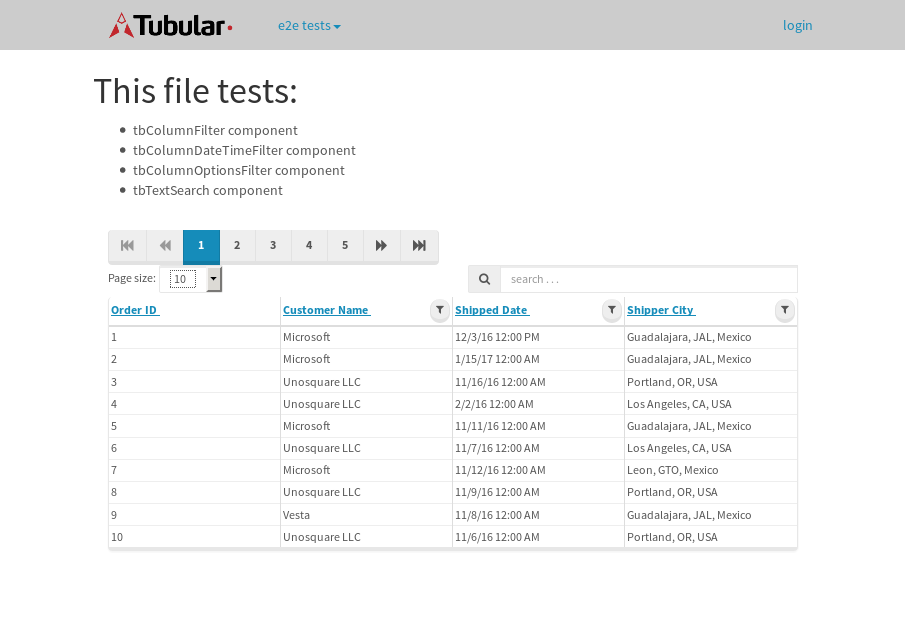
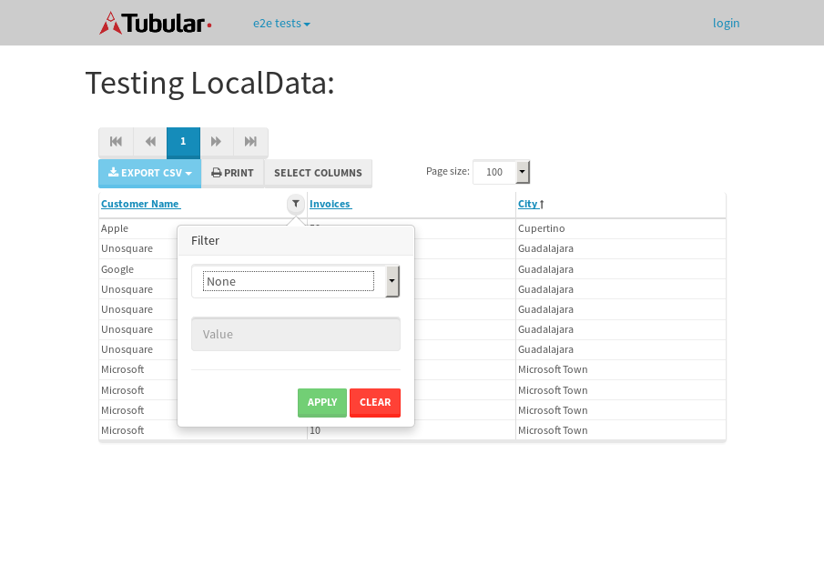

tbColumn.Grid Sorting - 28.564sTests: 5Skipped: 0Failures: 0 should sort data in ascending order then on descending order when sorting by Order Id column - 7.022sTests passed: 100.00%should order data in ascending order when click-sorting an unsorted text column - 5.384sTests passed: 100.00%should order data in descending order when click-sorting an ascending-sorted text column - 5.453sTests passed: 100.00%should order data in ascending order when click-sorting an unsorted date column - 5.087sTests passed: 100.00%should order data in descending order when click-sorting twice an unsorted date column - 5.617sTests passed: 100.00%
tbColumn.Grid Components - 3.409sTests: 3Skipped: 0Failures: 0 should print grid - 1.251s***Skipped***Tests passed: 0%should export grid - 1.135s***Skipped***Tests passed: 0%should show column selector - 1.023sTests passed: 100.00%
tbSingleForm.Form validations - 2.611sTests: 2Skipped: 0Failures: 0 should have an empty required field - 1.498sTests passed: 100.00%should not be able to click on save - 1.112sTests passed: 100.00%
Tubular Filters.tbColumnFilter - 110.48sTests: 12Skipped: 0Failures: 0 should cancel filtering when clicking outside filter-popover - 9.459sTests passed: 100.00%should disable Value text-input for "None" filter - 6.771sTests passed: 100.00%should disable apply button for "None" filter - 6.423sTests passed: 100.00%should decorate popover button when showing data is being filtered for its column - 11.761sTests passed: 100.00%should correctly filter data for the "Equals" filtering option - 8.421sTests passed: 100.00%should correctly filter data for the "Not Equals" filtering option - 8.721sTests passed: 100.00%should correctly filter data for the "Contains" filtering option - 8.693sTests passed: 100.00%should correctly filter data for the "Not Contains" filtering option - 9.323sTests passed: 100.00%should correctly filter data for the "Starts With" filtering option - 7.798sTests passed: 100.00%should correctly filter data for the "Not Starts With" filtering option - 6.935sTests passed: 100.00%should correctly filter data for the "Ends With" filtering option - 8.211sTests passed: 100.00%should correctly filter data for the "Not Ends With" filtering option - 6.729sTests passed: 100.00%
Tubular Filters.tbColumnDateTimeFilter - 136.336sTests: 12Skipped: 0Failures: 0 should cancel filtering when clicking outside filter-popover - 8.006sTests passed: 100.00%should disable Value text-input for "None" filter - 7.186sTests passed: 100.00%should disable apply button for "None" filter - 6.71sTests passed: 100.00%should clear filtering when clicking on Clean button - 18.36sTests passed: 100.00%should decorate popover button when showing data is being filtered for its column - 12.129sTests passed: 100.00%should correctly filter data for the "Equals" filtering option - 6.815sTests passed: 100.00%should correctly filter data for the "Not Equals" filtering option - 6.843sTests passed: 100.00%should correctly filter data for the "Between" filtering option - 11.951sTests passed: 100.00%should correctly filter data for the "Greater-or-equal" filtering option - 11.908sTests passed: 100.00%should corretlly filter data for the "Greater" filtering option - 11.944sTests passed: 100.00%should correctly filter data for the "Less-or-equal" filtering option - 12.132sTests passed: 100.00%should correctly filter data for the "Less" filtering option - 11.75sTests passed: 100.00%
Tubular Filters.tbColumnOptionsFilter - 82.407sTests: 3Skipped: 0Failures: 0 should cancel filtering when clicking outside filter-popover - 9.112sTests passed: 100.00%should decorate popover button when showing data is being filtered for its column - 11.983sTests passed: 100.00%should filter column-elements in accordance to the selected filter when selecting a single option - 50.379sTests passed: 100.00%
Tubular Filters.tbTextSearch - 48.366sTests: 5Skipped: 0Failures: 1 min-chars is not set - 0.953sTests passed: 100.00%should filter data in searchable-column customer name to matching inputted text, starting from 3 characters - 6.629sTests passed: 100.00%should filter data in searchable-column shipper city to matching inputted text, starting from 3 characters - 12.025sTests passed: 100.00%should show clear button when there is inputted text only - 6.811sTests passed: 100.00%should clear filtering when clicking clear button - 16.586sExpected 10 not to be 10.✗Tests passed: 0.00%
tbForm related components.tbCheckboxField - 9.557sTests: 2Skipped: 0Failures: 0 should save changes on "SAVE" - 4.954sTests passed: 100.00%should discard changes on "CANCEL" - 2.075sTests passed: 100.00%
tbForm related components.tbDropDownEditor - 14.423sTests: 5Skipped: 0Failures: 0 should set initial input value to the value of "value" attribute when defined - 2.511sTests passed: 100.00%should show the component name value in a label field when "showLabel" attribute is true - 2.04sTests passed: 100.00%should show a help field equal to this attribute, is present - 2.038sTests passed: 100.00%should submit modifications to item/server when clicking form "Save" - 4sTests passed: 100.00%should NOT submit modifications to item/server when clicking form "Cancel" - 2.771sTests passed: 100.00%
tbForm related components.tbTextArea - 19.173sTests: 7Skipped: 0Failures: 0 should set initial input value to the value of "value" attribute when defined - 2.264sTests passed: 100.00%should be invalidated when the number of chars is not in the range of "min" and "max" attributes - 2.155sTests passed: 100.00%should show the component name value in a label field when "showLabel" attribute is true - 1.72sTests passed: 100.00%should show a help field equal to this attribute, is present - 2.302sTests passed: 100.00%should require the field when the attribute "required" is true - 3.269sTests passed: 100.00%should submit modifications to item/server when clicking form "Save" - 4.75sTests passed: 100.00%should NOT submit modifications to item/server when clicking form "Cancel" - 1.902sTests passed: 100.00%
tbForm related components.tbDateEditor - 18.66sTests: 6Skipped: 0Failures: 4 should set initial date value to the value of "value" attribute when defined - 2.11sExpected false to be true.✗Tests passed: 0.00%should be invalidated when the date is not in the range of "min" and "max" attributes - 5.218sExpected false to be true.✗Expected 1 to be less than 1.✗Tests passed: 33.33%should show the component name value in a label field when "showLabel" attribute is true - 1.93sTests passed: 100.00%should show a help field equal to this attribute, is present - 3.013sTests passed: 100.00%should submit modifications to item/server when clicking form "Save" - 2.617sExpected false to be true.✗Tests passed: 0.00%should NOT submit modifications to item/server when clicking form "Cancel" - 2.284sExpected false to be true.✗Tests passed: 0.00%
tbForm related components.tbTypeaheadEditor - 16.764sTests: 7Skipped: 0Failures: 1 should show an options list when there is an API-info/component entered-data - 2.552sTests passed: 100.00%should select the option clicked - 2.195sTests passed: 100.00%should show a "delete" button when an option/match is selected, and delete the option if button is clicked - 2.203sFailed: each key must be a number of string; got boolean✗Tests passed: 50.00%should show a label value equal to the component name when "showLabel" attribue is true - 1.57sTests passed: 100.00%should require a value when "require" attribute is true - 2.272sTests passed: 100.00%should submit modifications to item/server when clicking form "Save" - 3.23sTests passed: 100.00%should NOT submit modifications to item/server when clicking form "Cancel" - 1.996sTests passed: 100.00%
tbForm related components.tbSimpleEditor - 20.898sTests: 9Skipped: 0Failures: 1 should set initial input value to the value of "value" attribute when defined - 1.567sTests passed: 100.00%should be invalidated when the number of chars is not in the range of "min" and "max" attributes - 2.08sTests passed: 100.00%should show the component name value in a label field when "showLabel" attribute is true - 2.308sTests passed: 100.00%should set input placeholder to the value of "placeholder" attribute - 2.164sTests passed: 100.00%should validate the control using the "regex" attribute, if present - 1.913sFailed: each key must be a number of string; got function✗Tests passed: 0.00%should show a help field equal to this attribute, is present - 1.861sTests passed: 100.00%should require the field when the attribute "required" is true - 2.247sTests passed: 100.00%should submit modifications to item/server when clicking form "Save" - 3.433sTests passed: 100.00%should NOT submit modifications to item/server when clicking form "Cancel" - 2.695sTests passed: 100.00%
tbForm related components.tbNumericEditor - 19.78sTests: 7Skipped: 0Failures: 0 should set initial component value to the value of "value" attribute when defined - 1.879sTests passed: 100.00%should be invalidated when the entered number is not in the range of "min" and "max" attributes - 2.469sTests passed: 100.00%should show the component name value in a label field when "showLabel" attribute is true - 2.281sTests passed: 100.00%should show a help field equal to this attribute, is present - 2.732sTests passed: 100.00%should require the field when the attribute "required" is true - 2.506sTests passed: 100.00%should submit modifications to item/server when clicking form "Save" - 3.673sTests passed: 100.00%should NOT submit modifications to item/server when clicking form "Cancel" - 3.394sTests passed: 100.00%
tbForm Connection Error - 2.592sTests: 1Skipped: 0Failures: 0 tbForm connection error functionality - 0.469sTests passed: 100.00%
tbForm Connection Error - 2.619sTests: 1Skipped: 0Failures: 0 tbForm connection error functionality - 0.471sTests passed: 100.00%
tbForm Connection Error - 2.866sTests: 1Skipped: 0Failures: 1 tbForm connection error functionality - 0.579sExpected '' to equal 'No data found'.✗Tests passed: 0.00%
tb Form Date Editor.tbDateEditor - 18.556sTests: 6Skipped: 0Failures: 0 should set initial date value to the value of "value" attribute when defined - 1.943sTests passed: 100.00%should be invalidated when the date is not in the range of "min" and "max" attributes - 3.004sTests passed: 100.00%should show the component name value in a label field when "showLabel" attribute is true - 2.415sTests passed: 100.00%should show a help field equal to this attribute, is present - 1.913sTests passed: 100.00%should submit modifications to item/server when clicking form "Save" - 3.093sTests passed: 100.00%should NOT submit modifications to item/server when clicking form "Cancel" - 4.122sTests passed: 100.00%
tbGridComponents - 8.974sTests: 6Skipped: 0Failures: 0 should add item with newRow method - 2.315sTests passed: 100.00%should add item with newRow method and cancel action - 0.648sTests passed: 100.00%should update item with tbSaveButton - 1.334sTests passed: 100.00%should update item with tbSaveButton and cancel action - 1.023sTests passed: 100.00%should remove item with tbRemoveButton - 1.229sTests passed: 100.00%should remove item with tbRemoveButton and cancel action - 0.784sTests passed: 100.00%
tbGridPager.navigation buttons - 8.047sTests: 1Skipped: 0Failures: 0 should perform no action when clicking on the numbered navigation button corresponding to the current-showing results page - 1.352sTests passed: 100.00%
tbGridPager.navigation buttons.first/non-last results page related functionallity - 3.496sTests: 2Skipped: 0Failures: 0 should disable "first" and "previous" navigation buttons when in first results page - 1.569sTests passed: 100.00%should enable "last" and "next" navigation buttons when in a results page other than last - 1.927sTests passed: 100.00%
tbGridPager.navigation buttons.last/non-first results page related functionallity - 3.197sTests: 2Skipped: 0Failures: 0 should disable "last" and "next" navigation buttons when in last results page - 1.712sTests passed: 100.00%should enable "first" and "previous" navigation buttons when in a results page other than first - 1.485sTests passed: 100.00%
tbGridPager.page navigation - 7.994sTests: 5Skipped: 0Failures: 0 should go to next results page when clicking on next navigation button - 1.47sTests passed: 100.00%should go to previous results page when clicking on previous navigation button - 1.613sTests passed: 100.00%should go to last results page when clicking on last navigation button - 2.347sTests passed: 100.00%should go to first results page when clicking on first navigation button - 1.324sTests passed: 100.00%should go to corresponding results page when clicking on a numbered navigation button - 1.239sTests passed: 100.00%
tbGridPagerInfo - 5.186sTests: 2Skipped: 0Failures: 0 should show text in accordance to numbered of filter rows and current results-page - 1.63sTests passed: 100.00%should show count in footer - 0.577sTests passed: 100.00%
tbHttp - 24.028sTests: 8Skipped: 0Failures: 0 should be authenticated - 3.115sTests passed: 100.00%retrieve data - 2.321sTests passed: 100.00%should not login bad credentials - 2.585sTests passed: 100.00%should have a refresh token - 3.495sTests passed: 100.00%should remove authentication - 2.429sTests passed: 100.00%get method-Is not authenticated - 2.922sTests passed: 100.00%post method-Is not authenticated - 4.273sTests passed: 100.00%should regenerate access token on post - 2.888sTests passed: 100.00%
LocalData.Grid Local Data Sorting - 7.788sTests: 4Skipped: 0Failures: 1 should order data in ascending order when click-sorting an unsorted text column - 1.833sTests passed: 100.00%should order data in descending order when click-sorting an ascending-sorted text column - 1.908sTests passed: 100.00%should correctly filter data for the "Contains" filtering option - 1.721sFailed: Element is not currently interactable and may not be manipulated✗Tests passed: 0.00%should correctly filter data for the "Contains" with ENTER key - 2.323sTests passed: 100.00%
OData.Grid OData Sorting - 38.848sTests: 7Skipped: 0Failures: 1 should order data in ascending order when click-sorting an unsorted numeric column - 5.968sTests passed: 100.00%should order data in descending order when click-sorting an ascending-sorted numeric column - 6.065sTests passed: 100.00%should order data in ascending order when click-sorting an unsorted text column - 3.507sTests passed: 100.00%should order data in descending order when click-sorting an ascending-sorted text column - 5.492sTests passed: 100.00%should order data in ascending order when click-sorting an unsorted date column - 6.654sTests passed: 100.00%should order data in descending order when click-sorting an ascending-sorted date column - 7.096sTests passed: 100.00%should correctly filter data for the "Contains" filtering option - 4.064sFailed: Element is not enabled✗Tests passed: 0.00%
tbPageSizeSelctor - 16.696sTests: 4Skipped: 0Failures: 0 should filter up to 10 data rows per page when selecting a page size of "10" - 2.435sTests passed: 100.00%should filter up to 20 data rows per page when selecting a page size of "20" - 2.488sTests passed: 100.00%should filter up to 50 data rows per page when selecting a page size of "50" - 4.563sTests passed: 100.00%should filter up to 100 data rows per page when selecting a page size of "100" - 4.928sTests passed: 100.00%
tbRowSelectable - 12.956sTests: 2Skipped: 0Failures: 0 selected rows - 7.788sTests passed: 100.00%unselected rows - 3.471sTests passed: 100.00%
tbSingleForm.Form fields - 16.06sTests: 7Skipped: 0Failures: 1 should load correct info - 1.203sTests passed: 100.00%should change customer name - 1.001sTests passed: 100.00%should save it - 3.408sFailed: Element is not enabled✗Tests passed: 0.00%should clear the inputs - 1.069sTests passed: 100.00%should update - 1.48sTests passed: 100.00%should reset editor - 4.351sTests passed: 100.00%should not save if not Changes - 3.547sTests passed: 100.00%
tbSingleForm.Form validations - 2.32sTests: 2Skipped: 0Failures: 0 should load correct info - 1.007sTests passed: 100.00%should not be able to click on save - 1.313sTests passed: 100.00%
tubularTemplateServiceModule.#createColumns() - 1.662sTests: 2Skipped: 0Failures: 0 should return an array with 7 elements - 0.815sTests passed: 100.00%first element should match - 0.846sTests passed: 100.00%
tubularTemplateServiceModule.#generateFieldsArray() - 1.894sTests: 2Skipped: 0Failures: 0 should return an array with 7 elements - 0.923sTests passed: 100.00%first element should match - 0.971sTests passed: 100.00%
tubularTemplateServiceModule.#generatePopup() - 1.125sTests: 1Skipped: 0Failures: 0 should html match - 1.125sTests passed: 100.00%
tubularTemplateServiceModule.#getEditorTypeByDateType() - 3.73sTests: 4Skipped: 0Failures: 0 should be tbDateTimeEditor - 0.888sTests passed: 100.00%should be tbNumericEditor - 0.89sTests passed: 100.00%should be tbCheckboxField - 1.026sTests passed: 100.00%should be tbSimpleEditor - 0.926sTests passed: 100.00%
tubularTemplateServiceModule.#generateForm() - 2.744sTests: 3Skipped: 0Failures: 0 should single layout html match - 0.909sTests passed: 100.00%should two columns layout html match - 1.059sTests passed: 100.00%should three columns layout html match - 0.776sTests passed: 100.00%
tubularTemplateServiceModule.#generateCells() - 0.878sTests: 1Skipped: 0Failures: 0 should html match - 0.877sTests passed: 100.00%
tubularTemplateServiceModule.#generateGrid() - 0.824sTests: 1Skipped: 0Failures: 0 should html match - 0.824sTests passed: 100.00%


{kind=link}
{kind=link}